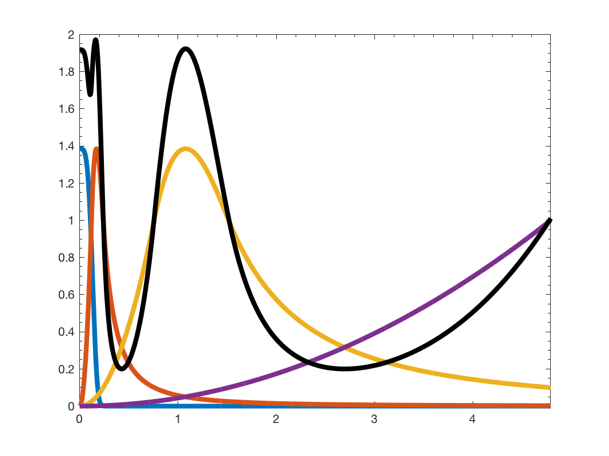

g = gsp_design_abspline(G, Nf, param); gsp_design_abspline(G ,Nf); gsp_design_abspline(G);
| G | Graph or upper bound on the Laplacian spectrum |
| Nf | Number of filters to cover the interval [0,lmax] (default 6) |
| param | Structure of optional parameters |
| g | A cell array of filters |
This function return a array of filters designed to be AB spline wavelet. The AB spline wavelet is .....
In our convention the eigenvalues of Laplacian are equivalent to the square of vertex frequencies: \(f = \lambda^2\).
The low pass filter is given by
param is an optional structure containing the following fields
This function will compute the maximum eigenvalue of the laplacian. To be more efficient, you can precompute it using:
G = gsp_estimate_lmax(G);
Example:
Nf = 4; G = gsp_sensor(100); G = gsp_estimate_lmax(G); g = gsp_design_abspline(G, Nf); gsp_plot_filter(G,g);
This function is inspired by the sgwt_toolbox.